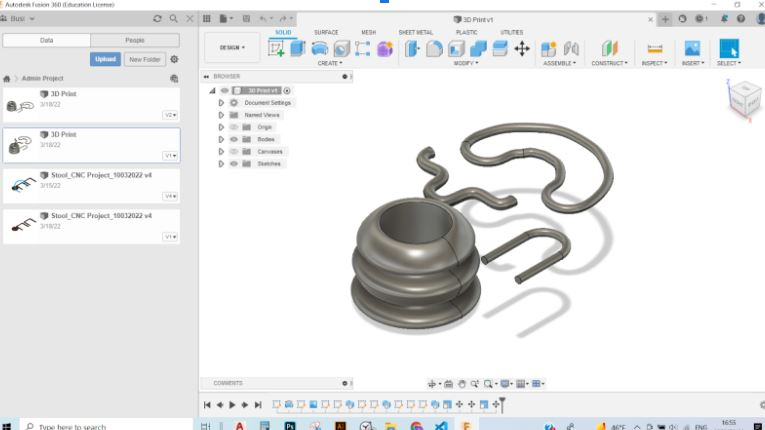
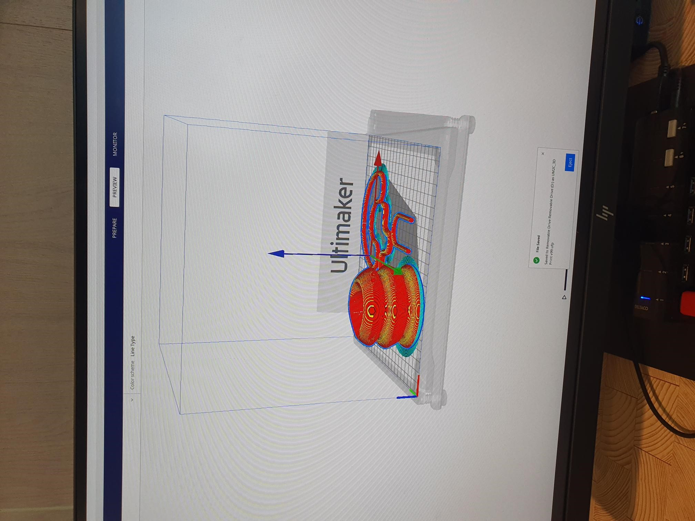
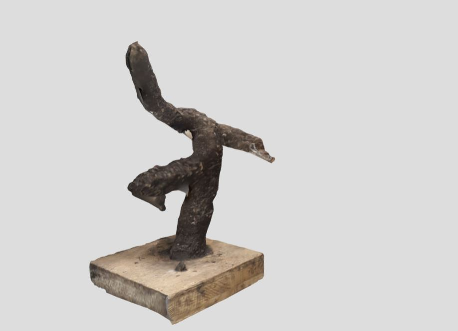

Week 5:3D printing and scanning
This week’s assignment was around computer aided cutting, mostly centered around lazer cutting and vinyl cutting. The project I sought to do was to make fidgeting toys and accessories For adults dealing with obsessive compulsive disorders (OCD) and body-focused (BFRB) repetitive behavior ( such as nail biting, hair pulling and fidgeting). The idea is to 3D print artifacts that are aesthetically pleasing and look like sculptures, that can be placed in the home, office table or school, easily accessible for the user when they have bodily focused urges. The shape of the artifacts resemble the Nigerian language Nsibi. The collection of artifacts resemble a few speech, love and unity.
Steps for manufacturing
1. I modeled the artifacts on Fusion 360. Then after, I exported the 3D model into STL files.

2. To 3D print the model I used the Ultimaker printer. It is a single extrusion swappable nozzle using PP as a material. To prepare the file, I Imported the CAD file, I chose material using CURA, sliced with optimized settings, and remotely sent the print job.

For the printing I used the following parameters on CURA: And the following parameters:
- Filament: PLA
- Filament diameter: 1.75mm
- Nozzle: 0.4mm
- Layer height: 0.2mm
- Infill: 20%
- Supports: yes
- Extruder temperature: 215ºC
- Bed temperature: 60ºC
- Open Source
- A photogrammetric tool used for reconstruction and camera tracking algorithms.
- Easy interface, one can reconstruct a model from 10-20 pictures of the object
- You can use cloud to create massive data files
- Recap can create point clouds from photos, align scan
- ReCap incorporates the best of both photo and laser data capture

3D Scanning
Following my project in running a digital gallery, I scanned some sculptures from a classmate to exhibit in the gallery. For the scanning, I used the Android app called 3D Live scan, which I used for previous projects throughout the Master’s. The app has a object scanning feature that functions on an online cloud server. I captured the sculpture but taking 10-20 pictures of it,where the app converted them into a 3D model. Additionally I got adapted and explored Meshroom and Autodesk Recap. Some Advantages of each include:

Images of the sculpture I 3D scanned
Meshroom
Autodesk Recap